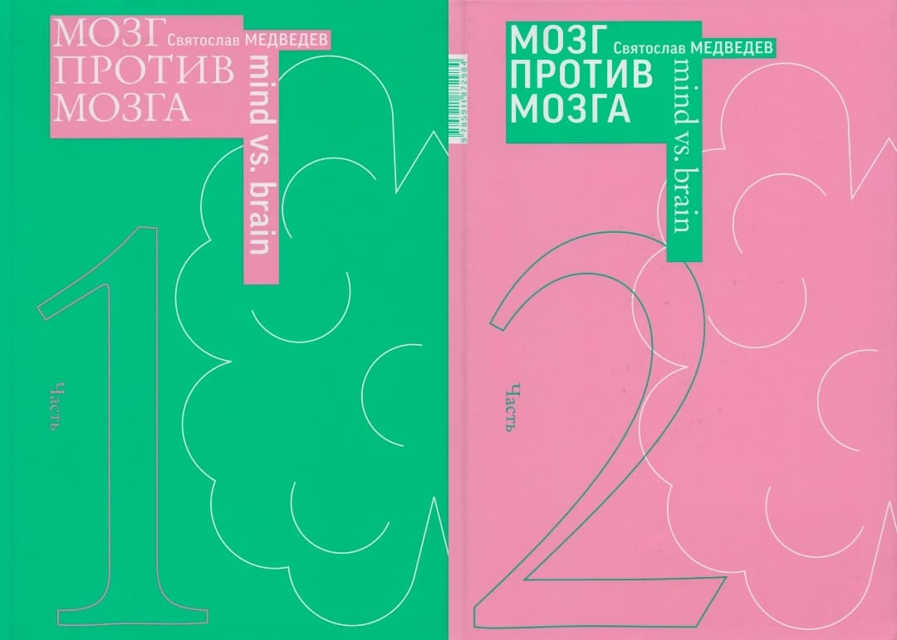

Интервью с мэтром: Борис Трофимов о жизни, дизайне и счастье творчества
Платформа Arzamas представила большое интервью с легендой отечественного дизайна — Борисом Трофимовым. Дизайнер-график, педагог и один из основоположников российской дизайнерской школы поделился воспоминаниями о своём пути, создании знаковых проектов (включая пиктограммы для московской Олимпиады-80) и размышлениями о сути профессии.
Полное интервью можно посмотреть здесь: youtube.com/watch?v=sILP23TJrRo
Путь к призванию: от хулигана до десантника
Борис Трофимов вырос в Москве в семье инженера-конструктора троллейбусов, который позже стал журналистом и сам делал бумажные модели и рекламные плакаты. В школе будущий дизайнер увлекался естественными науками, но не любил точные дисциплины, за что даже остался на второй год. Его энергия находила выход в радиокружке, где команда даже побеждала во всесоюзных соревнованиях.
Не поступив с первого раза в Строгановское училище, он попал в армию — в парашютно-десантный полк. Служба, по его словам, превратила растерянного юношу в «бравого солдатика», научившегося всему. Именно в армейском клубе он начал рисовать — создавал декорации и дембельские альбомы.
Становление мастера: от типографии до олимпийских символов
После армии Трофимов поступил в Полиграфический институт, где студенты с нуля осваивали всё ремесло: от набора текста до переплёта собственных дипломных книг. Этот опыт стал фундаментальным.
Его профессиональная карьера началась в конструкторских бюро эпохи СССР — СХКБ-Легпром и «Промграфике», где он занимался дизайном упаковки, фирменных стилей для фабрик и прикладной графикой. Он с теплотой вспоминает заказчиков того времени — уважительных и благодарных, хотя внедрялось, увы, не всё.
Вершиной этой эпохи стала работа над пиктограммами для Олимпиады-80. Перед командой Трофимова стояла задача создать почти 400 универсальных знаков, которые помогли бы иностранцам ориентироваться в Москве без языка. Их новаторский стиль позже был отмечен золотой медалью на выставке в Брно.
Философия дизайна: книга как ребёнок, а художник — не ремесленник
Борис Владимирович рассуждает о нескольких ключевых для себя темах:
- Российский дизайн: Зародившись в 80-х, он впитал мировые тенденции, но сохранил свою эмоциональность и иллюстративность, в отличие от минималистской «швейцарской школы».
- Творчество vs ремесло: Настоящий художник — не тот, кто копирует действительность, а тот, кто открывает новое. Дизайн — именно об этом.
- Самое счастливое мгновение: Это момент, когда после долгих поисков находится блестящая, точная идея для проекта.
Особенно ярко его подход проявляется в дизайне книг. Для него каждая книга — уникальная история, требующая глубокого погружения. Он не просто оформляет, а придумывает концепцию, соответствующую содержанию.
-
Для книги Святослава Медведева «Мозг против мозга» он предложил формат «перевёртыша» с двумя
независимыми частями, визуально напоминающий два полушария мозга.

-
В оформлении двухтомника Юрия Роста «РЭГ-ТАЙМ» («разорванное время») название на корешках разорвано и складывается в целое, только когда тома стоят рядом.

«Книга должна увлекать, делать читателя участником, — говорит Трофимов. — Она как ребёнок, которого выпускаешь в жизнь».
Ценности: творческое детство и свобода для искусства
Размышляя об истории, он отмечает, что «Оттепель» дала мощный импульс свободному творчеству, несмотря на такие удары, как разгром выставки в Манеже. Для искусства, убеждён Трофимов, жизненно важна питательная среда и возможность быть на виду.
Эту же мысль он проносит через отношение к семье. Своим детям он старался устраивать такие же творческие, наполненные играми, квестами и рукоделием дни рождения, какие когда-то делал для него отец. По его мнению, творческое, созидательное детство — залог того, что человек вырастет интересным и цельным.